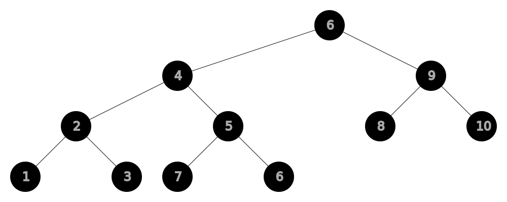

SiteMap
|
Sorting
Comparison:
Non-Comparison:
|
Selection
Time [Best
Ω(n²)
Average
Θ(n²)
Worst
O(n²)]
Space
Worst [
O(1)]
Stable
No
In-place
Yes
Find min/max and put it to the left, bit by bit, swapping
for (int i = 0; i < array.length - 1; i++) {
int minIndex = i;
for(int j = i + 1; j < array.length; j++) {
if (array[j] < array[minIndex]) {
minIndex = j;
}
}
swap(array, i, minIndex);
}
Bubble
Time [Best
Ω(n)
Average
Θ(n²)
Worst
O(n²)]
Space
Worst [
O(1)]
Stable
Yes
In-place
Yes
Iterate array over and over, swaping adjacent elements until it sorted
while(!sorted) {
sorted = true;
for (int i = 0; i < array.length - 1 ; i++) {
if (array[i] > array[i + 1]) {
swap(array, i, i + 1);
sorted = false;
}
}
}
Insertion
Usage: Widely used for
small data sets.
Time [Best
Ω(n)
Average
Θ(n²)
Worst
O(n²)]
Space
Worst [
O(1)]
Stable
Yes
In-place
Yes
Consistently searches place where to insert current element.
for (int i = 1; i < array.length; i++) {
int x = array[i];
int j = i;
for (; j > 0 && array[j-1] > x; j--) {
array[j] = array[j-1];
}
array[j] = x;
}
Merge
Time [Best
Ω(n·log(n))
Average
Θ(n·log(n))
Worst
O(n·log(n))]
Space
Worst [
O(n)]
Stable
Yes
In-place
No
"Divide-and-conquer" approach. Divides array into arrays with 1 element in each,
then comparing them and merging piece by piece.
Can be parallelized.
Ways:
Top-down - recursive
(examples below).
Bottom-up - iterative, non-recursive.

int[] divideThenSortAndMerge(int[] array) {
if (array.length > 1) {
int mid = array.length / 2;
int[] leftHalf = Arrays.copyOfRange(array, 0, mid);
int[] rightHalf = Arrays.copyOfRange(array, mid, array.length);
int[] sortedLeft = divideThenSortAndMerge(leftHalf);
int[] sortedRight = divideThenSortAndMerge(rightHalf);
array = sortAndMerge(sortedLeft, sortedRight);
}
return array;
}
int[] sortAndMerge(int[] left, int[] right) {
int[] result = new int[left.length + right.length];
int i = 0, j = 0, k = 0;
while (i < left.length && j < right.length) {
result[k++] = left[i] < right[j] ? left[i++] : right[j++]; // comparison is here
}
while (i < left.length) {
result[k++] = left[i++];
}
while (j < right.length) {
result[k++] = right[j++];
}
return result;
}
Heap
Time [Best
Ω(n·log(n))
Average
Θ(n·log(n))
Worst
O(n·log(n))]
Space
Worst [
O(1)]
Stable
No
In-place
Yes
Based on
Binary Heap.
It views an input array as a
Binary Heap from the start and performs self-balancing.
For array:
6,4,9,2,5,8,10,1,3,7,6, the initial heap is:

Phases:
- Making the Max(min) heap
- Sorting the array by moving the max(min) elements to the end of array, consistently reducing the heap
int[] heapSort(int[] array) {
int n = array.length;
// Build the "Max-heap"
for (int i = n / 2 - 1; i >= 0; i--) {
heapify(array, n, i);
}
// The sorting: move the root(that is the max value) to the end of array,
// consistently reducing the heap
for (int i = n - 1; i > 0; i--) {
swap(array, 0, i);
heapify(array, i, 0);
}
return array;
}
void heapify(int[] array, int n, int root) {
int largest = root;
int left = 2 * root + 1;
int right = 2 * root + 2;
if (left < n && array[left] > array[largest]) {
largest = left;
}
if (right < n && array[right] > array[largest]) {
largest = right;
}
if (largest != root) {
swap(array, root, largest);
heapify(array, n, largest);
}
}
Quick
Time [Best
Ω(n·log(n))
Average
Θ(n·log(n))
Worst
O(n²)]
Space
Worst [
O(log(n))]
Stable
No
In-place
Yes
"Divide-and-conquer" approach.
It works by selecting a
pivot element
from the array and partitioning the other elements into two sub-arrays around the
pivot.
The
pivot by default is taken from the last element, but can be chosen randomly.
Slightly faster than
merge sort and
heapsort for randomized data, particularly on larger distributions.
// quickSortRange(array, 0, array.length - 1)
static void quickSortRange(int[] array, int start, int end) {
if (start < end) {
int pivotIndex = makePartition(array, start, end);
quickSortRange(array, start, pivotIndex - 1);
quickSortRange(array, pivotIndex + 1, end);
}
}
static int makePartition(int[] array, int start, int end) {
int pivot = array[end];
int i = start;
for (int j = start; j < end; j++) {
if (array[j] <= pivot) {
swap(array, i++, j);
}
}
swap(array, i, end);
return i;
}
SiteMap